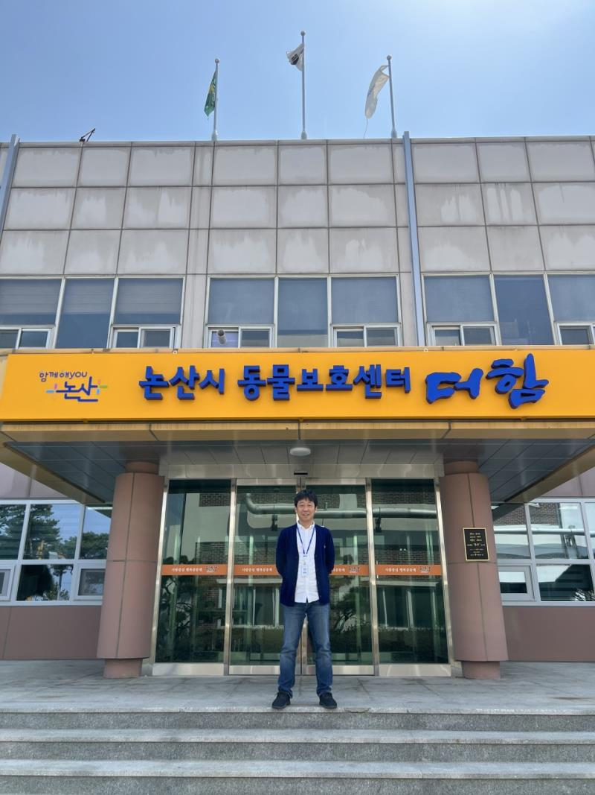

[New] I have been appointed as the Director of the Animal Protection Center "Durham" Center in Nonsan City.
Registration Date Author Life Attachment activitydata_04 {kind=link}
Hello.
I am the representative of the animal protection organization Life Shim In-sup.
I will visit the Nonsan City Animal Protection Center this time
I was appointed as the director of the center.
As an animal rights activist for about 10 years
various animal cruelty cases and animal production plants,
Closure of the old dog market, problems related to the gin dog, etc.
We have been accusing the world and improving the system.
However, there have always been problems with municipal shelters and
I couldn't erase the concerns about the direction of improvement for him.
With only numerically revealing data.
We have only been able to file complaints.
A civil servant who does not change, a system that does not change,
On the Great Barrier to Unchanging Perception
I've always been in the way.
"Is there no way to fundamentally change the operation of the shelter?"
The answer to this constant question is
In the end, all I had to do was experience it myself.
Just in time, Nonsan City Animal Protection Center
I decided to operate it directly.
I went through a conspiracy
I was appointed as the director of the Nonsan Animal Protection Center.
Approximately 2 months have passed since the appointment.
On the fringes of an unfamiliar administration
It is in the left and right corner,
In my head, the only thing that says, "I will not kill."
It's just a thought.
Constantly looking at the animals being admitted
You can't erase the burden that weighs on your shoulders.
Surely all these friends will be saved.
Can I send them all for adoption?
The burden is stressful.
But, let's give it a try.
It is not that the shelter is changed by the capacity of one individual.
systematic manuals and systems,
And how the system and the budget and the workforce are in place,
Whether it will be a shelter where animals can be saved.
I'm going to bump into my body and make it.
Not only Nonsan, but also other municipalities across the country
Such a shelter that can be benchmarked
We will create and operate it.
Traveling back and forth between Busan and Nonsan every week
I'm old and old, but
Your support and
Promoting adoption will go a long way toward stopping aging.
About 2 years from now, I would like to thank you very much.
I appreciate it.
* FYI, 3 days a week (Mon-Wed) is in Nonsan
Other days of the week are active in life.
#논산동물보호센터더함
#동물보호단체라이프